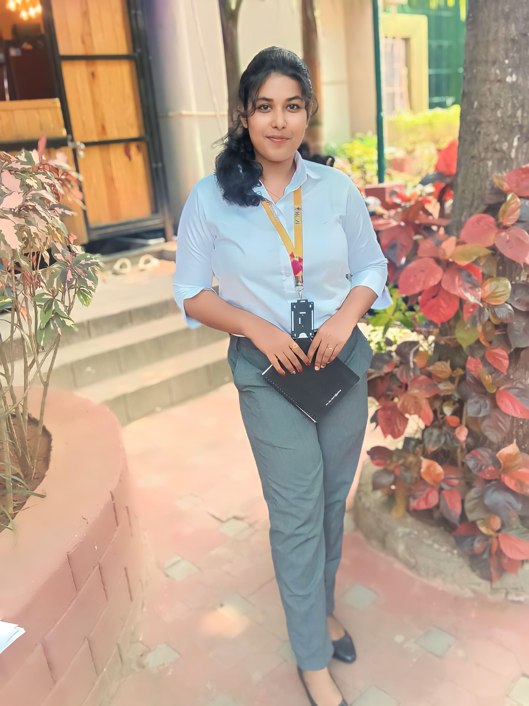

Strong in design and integration with intuitive problem-solvingskills. Passionate about implementing in lunching new projects. Ability to translate business requirments into technical solutions. Looking to start the career as an entry-level software engineer with a reputed firm driven by technology.

Regional College of
Management
contact:-
aryabartinijena21@gmail.com
+91-9040965652
At-Daliji,Block- Derabish ,Dist-Kendrapara,Odisha
linkedin.com/in/aryabartini jena/
EDUCATION
Master’s in Computer Application (Persuing)
Regional College of Management
Bachelor of Science| 73% (2019-2022)
Pattamundai degree college, Pattamundai
Intermediate in Science | 59% (2017-2019)
Alfa best college of science and technology
Matriculation | 73% (2015)
Bagdevi Bidya Pitha, Daliji
TECHNICAL SKILLS
Microsoft word
Microsoft Excel
Tally
Microsoft Power point
My SQL
C
Python
HTML
CSS
JAVA script
ACHIEVEMENTS
E-START BOOTCAMP
It is organized by Regional College Of Management
in collaboration with STARTUPODISHA.
Successfully
completed the project graduation in 2022.
Conducted blood donation camp to preach importance
of donating blood
Awarded by
UTKAL KALA ACADEMY for Painting.
SOFT SKILLS
Interpersonal Skills
Verbal and Written Communication Skills.
Team-Worker
Adaptive Leadership
Accountable and Responsible.
Continuous Learning
AVOCATION
Creative Writing
Designing ideas
Photography
Reading books
Dancing
LANGUAGE KNOWN
ENGLISH
HINDI
ODIA